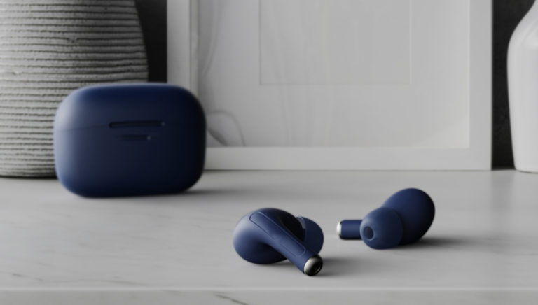
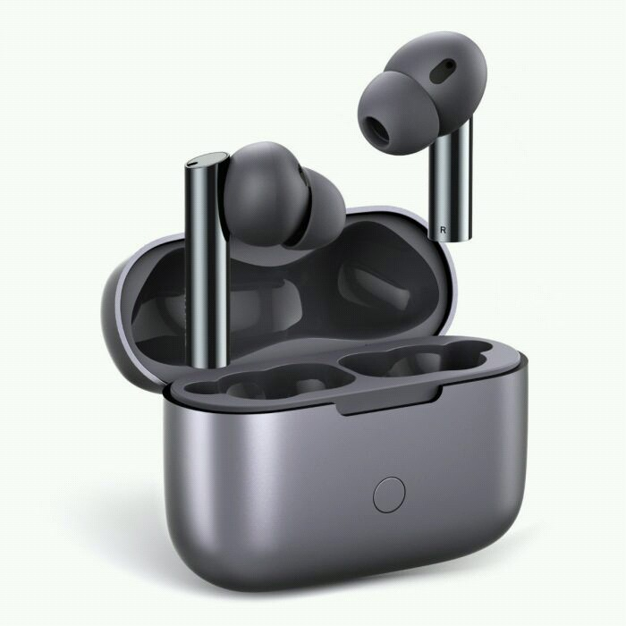
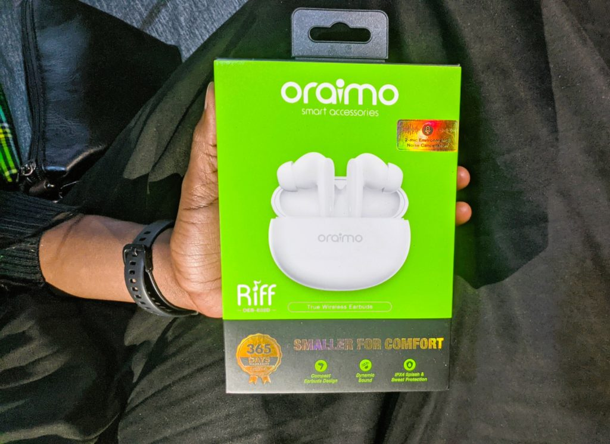
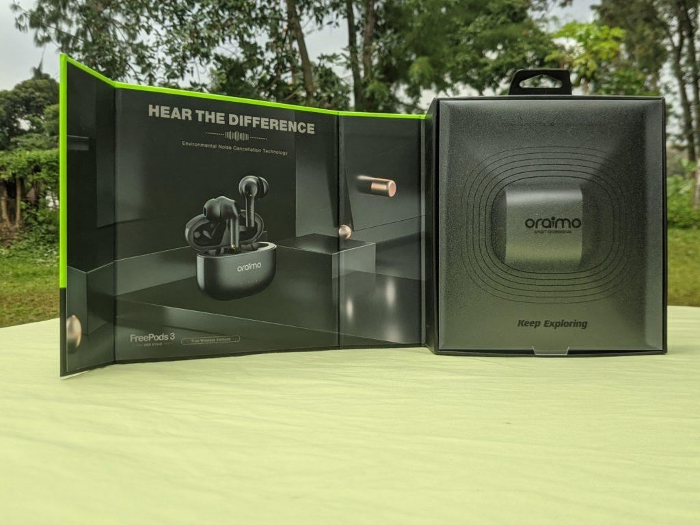
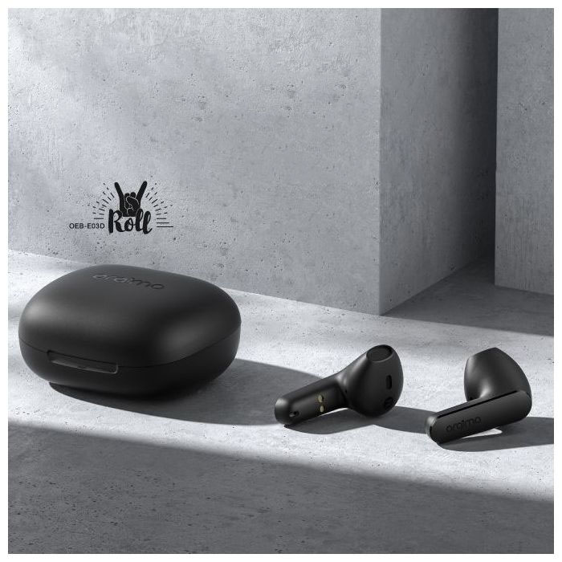
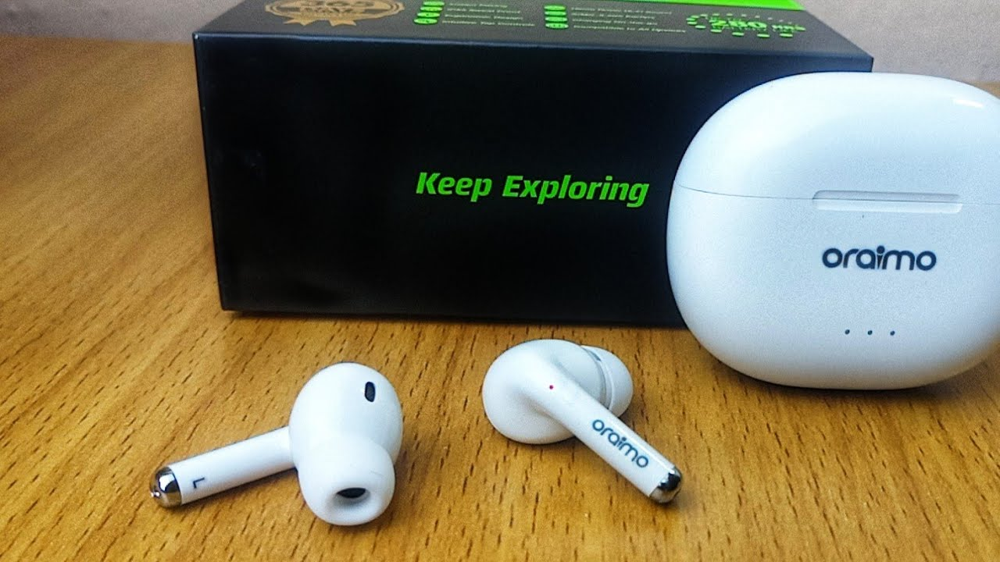
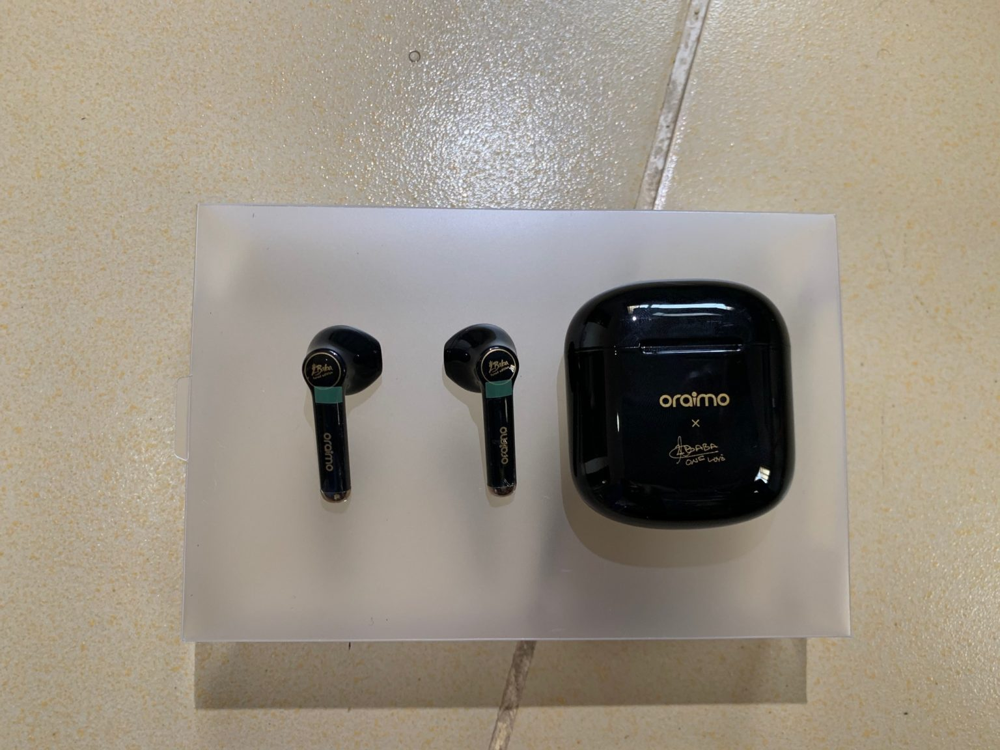

Oraimo TWS Buying Guide: Which Oraimo Wireless Earbuds should you buy?
Wireless earbuds are all the rage right now and it feels as though every OEM is digging their toes into this space. Oraimo, a renowned smart accessories brand in Africa and some Asian markets, continues to push out compelling true wireless buds.
The team here at Dignited has used many of these products and it is about time we consolidated the entire lineup for a quick buying guide, to help you choose an Oraimo-made wireless earphone that is best suited for you.
Oraimo Freepods Pro
The Oraimo Freepods Pro are the current flagship wireless buds from the company. They offer all the industry top features like a premium design, Active noise cancellation, all at a price of less than $100.
Oraimo Riff
On the other end of the price spectrum is the Oraimo Riff. These buds cost around $20 and still pack quite a punch. They have Bluetooth 5.0 and a rather slim profile compared to their siblings. Smaller for comfort is a rather apt description of these buds.
- Oraimo Riff True Wireless Earbuds Review: Don’t Let the Size Fool You
- Of course, Oraimo had to cut costs to deliver these buds for the said price and in my testing, I think they did that in the build quality, although not that much. They also did cut cost on the drivers as the sound stage isn’t as elaborate as its pricier siblings but for the everyday person, these are just fine.
- Price: KES2,500, ₦11,200, UGX 75,000s
Oraimo Freepods 3
My personal daily drivers so you know I am about to sound like a sales person. Seriously though, these buds have been popular in the market since they launched in 2021 and for a good reason. These buds offer so much value for money and the sound quality is where it’s at.
These charge via a USB-C cable and while the case does not hold up well over time, they offer a good sound stage, one that has, on numerous occasions, been compared to that of the Apple Airpods. Yes, they’re pretty good.
The bass is punchy, the mids are crisp, the highs could use some work but a decent EQ app helps you with this rather easily. There’s a reason many people use these buds and you bet they’re still going to be popular for months to come.
Price: ₦15,600, KES3,800, UGX 98,000
Roll with Tunes
The Roll with Tunes are the latest addition to Oraimo’s portfolio. These have a case design that’s pretty different from the ones we’ve seen with the Freepods. The case opens in half, vertically as opposed to the previous buds that have a lid and a neck.
These should appeal to users that loved the design of the Freepods 2 as they don’t come with rubber ear tips. We haven’t had a chance to test these in-house but looking at the price and what Oraimo has been doing, we expect decent sound but not as elaborate or wholesome as the ENC-enabled options, decent build quality, and the same robustness we have come to know and love from Oraimo.
Price: KES 1999, 16 USD, ₦9,500
Oraimo Freepods 2 Pro
The predecessors to the Freepods 3, these Freepods 2 Pro offer many of the perks we’ve come to know and love about these Oraimo buds, that is a killer sound quality, decent build, vast compatibility and all that at a relatively reasonable price.
The sound quality is no match for the Freepods 3 or even the Freepods Pro but it is nothing to sneeze at. This pair is missing any form of active noice cancellation, but it comes with rubber ear tips that offer ‘environmental noice cancellation’. Essentially, it blocks out ambient noise.
Oraimo Freepods 2
The Freepods 2 come with a 13mm dynamic driver that delivers decent audio that is a little above average and for the common person, this is more than acceptable.
My biggest gripe with these buds is the fact that it charges via micro-USB and not type-C. In 2022, USB-C is everywhere with all modern smartphones and even laptops charging with this universal, versatile port. I wouldn’t recommend these for that reason alone, if not for anything else.
However, these buds have been in the market for some time now. This means that the tiny batteries in the buds and in the case have probably degraded more than all the newer models. Should you want these, be ready to deal with lucklaster or poor battery performance.
Price: $22, ₦9500
Conclusion
Oraimo is proving to be a force to reckon with when it comes to smart accessories and we’re here for it. The prices are also relatively friendly so that is a plus.
These true wireless buds from Oraimo offer so much value for money and whichever one you pick, you’re bound to have a decent experience. Should your budget allow it, get the Oraimo Freepods Pro. Many have dubbed it the AirPods killer and that does account for something.
The Freepods 3 remain a favorite for many as it strikes an incredible balance between good sound and affordable price. No wonder these are still in the market for over a year since they first debuted. The oraimo Riff is your go-to should you be on a budget.
The older generation buds are also solid but the battery cells degrade over time, regardless of whether they’re being used or not. As such, I’d advise you to stay away from those and consider the Riff and Freepods 3.
If you’re not a fan of the rubber ear tips, then the Roll with Tunes and Freepods 3 are your options. Or better yet, wait for a few months and you know Oraimo will have another TWS product.
LIKE WHAT YOU ARE READING?
Sign up to our Newsletter for expert advice and tips
of how to get the
most out of your
Tech Gadgets
Subscribing to our newsletter indicates your consent to our Terms of Use and Privacy Policy. You may unsubscribe from the newsletters at any time.